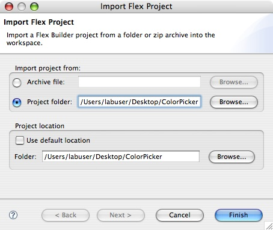
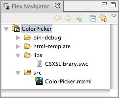
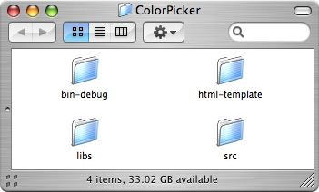
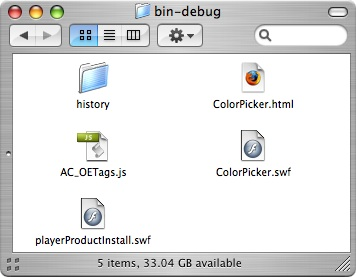
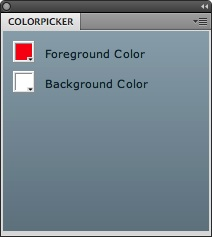

Color Picker Panel: ActionScript
The fourth part of the Color Picker Panel is programming the Adobe Photoshop Panel using ActionScript. Since Adobe Flex Builder was previously closed, the developer will able to import Adobe Flex Builder Project if there is an empty project. The developer will program in ActionScript to call functions and retrieve data from the JavaScript file created earlier. The developer will also program utility functions in ActionScript to initialize the Color Picker Panel and convert the character ID code events into an integer value to register for monitoring events. The developer will also set up a Photoshop Callback call to listen for registered events that are executed. After programming in ActionScript, the developer will copy the Adobe Flex Builder produced SWF file to the Adobe Photoshop Panels folder. The result is enabling and using the Color Picker Panel in Adobe Photoshop allowing users to change the colors on the Color Picker Panel or the colors on the tools palette in parallel.
Instructions:
- Open Adobe Flex Builder.
- If the ColorPicker project fails to show up:
- Go to File > Import > Flex Project....
- Select Project and Browse... to the ColorPicker folder on the desktop.
- Deselect Use default location.
- Press Finish. 
- Go to Flex Navigator or go to Window > Flex Navigator.
- Verify that CSXSLibrary.swc is under the libs folder. Double-click on ColorPicker.mxml if the Design Area is empty. 
- Go to Source Mode by selecting Source under the ColorPicker.mxml tab or go to Window > Switch Source/Design Mode. The initial code should look similar to the following:
<?xml version="1.0" encoding="utf-8"?> <mx:Application xmlns:mx="http://www.adobe.com/2006/mxml" layout="absolute"> <mx:ColorPicker x="10" y="10"/> <mx:ColorPicker x="10" y="40"/> <mx:Label x="40" y="14" text="Foreground Color"/> <mx:Label x="40" y="44" text="Background Color"/> </mx:Application>
- The red colored text are the changes made to ColorPicker.mxml:
<?xml version="1.0" encoding="utf-8"?> <mx:Application xmlns:mx="http://www.adobe.com/2006/mxml" layout="absolute"> <mx:Script> <![CDATA[ import com.adobe.csxs.core.CSXSInterface; import com.adobe.csxs.types.*; public function changePSForeground():void{ CSXSInterface.instance.evalScript("setForeground", ForegroundPicker.selectedColor.toString()); } public function changePSBackground():void{ CSXSInterface.instance.evalScript("setBackground", BackgroundPicker.selectedColor.toString()); } ]]> </mx:Script> <mx:ColorPicker x="10" y="10" id="ForegroundPicker" change="changePSForeground();"/> <mx:ColorPicker x="10" y="40" id="BackgroundPicker" change="changePSBackground();"/> <mx:Label x="40" y="14" text="Foreground Color"/> <mx:Label x="40" y="44" text="Background Color"/> </mx:Application>
Code Walkthrough: The code is a communication from the Color Picker Panel to the Color Picker JavaScript file. The ActionScript will have two imports from CSXSLibrary.swc as shown above to allow communication between the Color Picker JavaScript file and the Color Picker Panel. The functions
changePSForegroundandchangePSBackgroundcall the functionssetForegroundandsetBackgroundin ColorPicker.jsx respectively by passing the color selected from the respective ColorPicker control component calledForegroundPickerandBackgroundPicker. Each of the ColorPicker has achangeevent invoking the functionschangePSForegroundandchangePSBackgroundevery time the ColorPicker changes color. - The red colored text are the changes made to the Script tag in ColorPicker.mxml:
<mx:Script> <![CDATA[ import com.adobe.csxs.core.CSXSInterface; import com.adobe.csxs.types.*; public function changePSForeground():void{ CSXSInterface.instance.evalScript("setForeground", ForegroundPicker.selectedColor.toString()); } public function changePSBackground():void{ CSXSInterface.instance.evalScript("setBackground", BackgroundPicker.selectedColor.toString()); } public function getPSForeground():void{ var reqResult:SyncRequestResult = CSXSInterface.instance.evalScript("getForeground"); if (SyncRequestResult.COMPLETE == reqResult.status) { ForegroundPicker.selectedColor = parseInt("0x" + reqResult.data.foreground); } } public function getPSBackground():void{ var reqResult:SyncRequestResult = CSXSInterface.instance.evalScript("getBackground"); if (SyncRequestResult.COMPLETE == reqResult.status) { BackgroundPicker.selectedColor = parseInt("0x" + reqResult.data.background); } } ]]> </mx:Script>Code Walkthrough: The code is a communication from the Color Picker JavaScript file to the Color Picker Panel. The function
getPSForegroundandgetPSBackgroundcall the functionsgetForegroundandgetBackgroundin ColorPicker.jsx respectively by retrieving an XML object of typeSyncRequestResult. Each of the functions respectively set theselectedColorofForegroundPickerand/orBackgroundPickerafter parsing the value into a hexadecimal value. - The red colored text are the changes made to the Script tag in ColorPicker.mxml:
<?xml version="1.0" encoding="utf-8"?> <mx:Application xmlns:mx="http://www.adobe.com/2006/mxml" layout="absolute" creationComplete="init();"> <mx:Script> <![CDATA[ import com.adobe.csxs.core.CSXSInterface; import com.adobe.csxs.types.*; public function changePSForeground():void{ CSXSInterface.instance.evalScript("setForeground", ForegroundPicker.selectedColor.toString()); } public function changePSBackground():void{ CSXSInterface.instance.evalScript("setBackground", BackgroundPicker.selectedColor.toString()); } public function getPSForeground():void{ var reqResult:SyncRequestResult = CSXSInterface.instance.evalScript("getForeground"); if (SyncRequestResult.COMPLETE == reqResult.status) { ForegroundPicker.selectedColor = parseInt("0x" + reqResult.data.foreground); } } public function getPSBackground():void{ var reqResult:SyncRequestResult = CSXSInterface.instance.evalScript("getBackground"); if (SyncRequestResult.COMPLETE == reqResult.status) { BackgroundPicker.selectedColor = parseInt("0x" + reqResult.data.background); } } public function init():void{ getPSForeground(); getPSBackground(); CSXSInterface.instance.evalScript("PhotoshopRegisterEvent", charToInteger("setd").toString()); CSXSInterface.instance.evalScript("PhotoshopRegisterEvent", charToInteger("Rset").toString()); ExternalInterface.addCallback("PhotoshopCallback", PhotoshopCallback); } public function charToInteger(keyword:String):Number{ var value:Number; value = keyword.charCodeAt(0) * 256 * 256 * 256; value += keyword.charCodeAt(1) * 256 * 256; value += keyword.charCodeAt(2) * 256; value += keyword.charCodeAt(3); return value; } public function PhotoshopCallback(eventID:Number, descID:Number):void{ if(eventID == charToInteger("setd") || eventID == charToInteger("Rset")){ getPSForeground(); getPSBackground(); } } ]]> </mx:Script> <mx:ColorPicker x="10" y="10" id="ForegroundPicker" change="changePSForeground();"/> <mx:ColorPicker x="10" y="40" id="BackgroundPicker" change="changePSBackground();"/> <mx:Label x="40" y="14" text="Foreground Color"/> <mx:Label x="40" y="44" text="Background Color"/> </mx:Application>
Code Walkthrough: The
creationCompleteparameter insidemx:Applicationtag is like a constructor in Object-Oriented Programming. The functioninitis called bycreationCompleteto initialize the ColorPicker control components of the foreground and background color currently in Adobe Photoshop's tools palette. The functioninitalso setssetdandRsetas registered events using with the parameterPhotoshopRegisterEvent. Note: For more information aboutPhotoshopRegisterEvent, see Adobe Photoshop Reserved Words including how to unregister an event. Lastly, the functioninitincludesPhotoshopCallbackto monitor events in Adobe Photoshop. The functioncharToIntegertakes a string parameter calledkeywordand returns a convertedNumberreturned as value understood as a Photoshop event. Note: The parameterkeywordmust be four characters long since there is no error checking if it is three characters or less. The functionPhotoshopCallbacktakes in parametereventIDanddescIDto executegetPSForegroundandgetPSBackgroundwhenever an eventsetdorRsethas occurred in Adobe Photoshop. - Go to Run > Run ColorPicker to preview the design area in the web browser.
Note: The color pickers will not work in the web browser because the target is Adobe Photoshop. - Close the web browser.
- Close Adobe Flex Builder.
- Open the ColorPicker folder on the desktop.
 - Open the bin-debug folder.
 - Copy ColorPicker.swf into the Panels folder under the Adobe Photoshop CS5\Plug-ins\ folder located under:
- Applications for Macintosh
- Program Files for Windows
- Copy ColorPicker.jsx from the Panels folder into the bin-debug folder under the ColorPicker folder on the Desktop.
- Open Adobe Photoshop.
- Go to Windows > Extensions > ColorPicker. The ColorPicker Panel opens as a panel like seen below:
 - The Color Picker Panel now has two color pickers and two labels in which the user can change the background or foreground colors either on the Color Picker Panel or within the Adobe Photoshop tools palette.
- Close Adobe Photoshop.